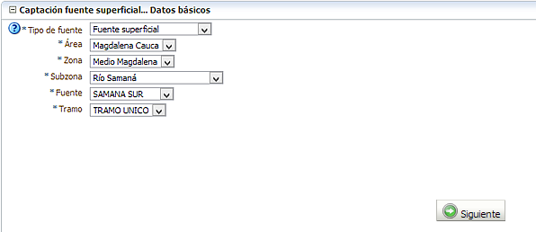

Este formulario le permite registrar los datos de una captación superficial o subterránea. A través de este asistente se le solicitará la siguiente información:
IMPORTANTE: Para registrar una captación de agua que se encuentra sobre un Río, Quebrada, Arroyo, entre otros, usted debió haber registrado el Tramo de esa fuente. De forma equivalente, para registrar una captación de agua subterránea, usted debió haber registrado el Sector del acuifero.
Si no lo ha hecho, regrese a la sección “Fuentes hídricas”, este dato es indispensable. De otra manera no podrá finalizar el proceso.

Captación superficial: se refiere a las captaciones de agua que estén haciendo extracción del recurso desde Ríos, Quebradas, Lagunas, Ciénagas, Pantanos, Embalses, entre otros.
Captación subterránea: se refiere a las captaciones de agua que estén haciendo extracción del recurso de Manantiales o a través de Pozos, o Aljibes.
Aguas servidas: captaciones realizadas desde residuos líquidos provenientes de uso domestico, comercial o industrial.
Aguas lluvias: captaciones realizadas en fuentes minerales y termales. Su principal diferencia se encuentra en que solicita el tipo de Captación, es decir si la captación se realiza a través de Techos, Terrazas impermeables o Zonas pavimentadas, área y oferta estimada.
Aguas minerales y termales: captaciones realizadas en fuentes minerales y termales. Su principal diferencia se encuentra en que solicita la Oferta explotable medida en metros cúbicos al año.
{kind=link}